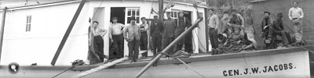
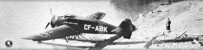
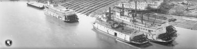

Larger sternwheelers carried more than 150 passengers. The upper “Texas” deck had better accommodation than the observation deck (the wheelhouse, on the uppermost level, was known as Monkey Island).
The schedules of sternwheelers with a high proportion of passengers were closely tied to the schedules of coastal vessels at Skagway; boats that carried mostly freight, like the S.S. Klondike I, were not.
“...three progressively smaller decks piled on the hull like the tiers of a wedding cake.”
Accommodations were fairly basic on most sternwheelers, although the tourist boats were known for wonderful service and great food.
The larger upper river vessels carried 200-250 tons of cargo. The use of barges, introduced in 1905, almost doubled steamers’ cargo capacity, but it also increased fuel consumption and operating time by one half.
For ease of handling, freight was stored on the main deck, called the freight house. Sternwheelers transported everything from “acid, carbonic” to “zinc, in sheets or rolls”. When water levels were low and navigation more difficult, rates were higher to discourage people from shipping. In the summer the boats ran 24 hours a day.
Tourism
Long summer days and spectacular scenery made the Yukon a popular tourist destination, and tourism became an important part of BYN Co.’s business. The S.S. Tutshi, launched as a tourist boat in 1917, took passengers on excursions on the Southern Lakes.

The interior of the “social hall” on the Alaska Commercial Company’s vessel, the S.S. Susie, a lower river boat.
Yukon Archives, U. of Alaska Archives photograph collection, #3107
Loading the Bank of Commerce gold shipment on a sternwheeler in Dawson, circa 1899.
Yukon Archives, Bill Roozeboom collection, #6289
(Left) Wheelhouse of S.S. Prospector
Yukon Archives, Scott/Phelps family collection, 89/31 #59

S.S. Casca at Hootalinqua, n.d.
Yukon Archives, MacBride Museum collection, #4006
Crew members on the deck of S.S. Gen. J.W. Jacobs, Whitehorse, n.d.
Yukon Archives, E.J. Hamacher fonds (Margaret and Rolf Hougen collection), 2002/118 #99

S.S. Canadian and three barges, carrying 600 tons of silver ore, at
Mayo,
May 19, 1923.
Yukon Archives, Bill Hare fonds, #6642

Sternwheeler log book entry (detail)
Yukon Archives, WP&YR fonds
(Left) Dining room check
Yukon Archives, Fred George Aylwin fonds, 94/57, MSS 287

The S.S. Gleaner at Taku, on Tagish Lake. Tourists travelled from Carcross to Taku, then continued their journey on the two-mile Taku Tram railway to Scotia Bay on Atlin Lake, where they boarded the S.S. Scotia for the eight-mile trip to Atlin. The scenic route was popular with tourists for many years.
Yukon Archives, Dennett family fonds, #3174
The S.S. Tutshi and a Junkers W-34 at Carcross, 1933.
Yukon Archives, Eldon Bjerke collection, 83/20 #1

The S.S. Scotia at Scotia Bay.
Yukon Archives, E.J. Hamacher fonds (Margaret and Rolf Hougen collection), 2002/118 #64
The busy Whitehorse shipyards, circa 1901; ten sternwheelers are in drydock, four are in the water.
Yukon Archives, E.J. Hamacher fonds (Margaret and Rolf Hougen collection), 2002/118 #95